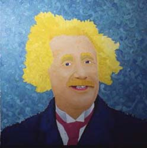

| < |
 |
For FolksEinstein's most colorful idea was his theory of gravity, general relativity. Space and time bend around a mass due to the necessity of geometry. Precise experiments have demonstrated that general relativity rules the heavens. The problem is that general relativity will not dance to quantum mechanics' quantized beat like every other modern theory. General relativity sways to the continuous sounds of classical strings. Despite sixty years of effort, attempts to make general relativity "modern" have failed. The artist is trying to unite general relativity and quantum mechanics by using something old, something new, something borrowed, and something blue. An old solution to general relativity is written in a new way by borrowing a gamma from special relativity. |
For NerdsNewton's law of gravity works. General relativity works ever so slightly better. Any replacement must match general relativity yet work with quantum mechanics. The Schwarzschild conversion factor arises out of a solution to four second order differential equations. This factor expands or contracts measurements of time and space in a way analogous to the gammas of special relativity, which are well integrated with quantum mechanics. The artist has tried to make the analogy more precise, asserting that a Taylor expansion of the Schwarzschild conversion factor is in fact a gamma, amenable to all the tools of trade. E/c^2 has been illegally substituted for mass so that the resulting gamma will not change its form under a Lorentz transformation. |